Core · Video walkthrough
Create an invoice and verify offline payments and aging
Create a customer profile and manual invoice, mark it sent without email, record separate offline payments, and verify saved balances, aging and the Paid filter.
Before you begin
- Authorized invoicing view and management access in a local fictional department.
- An existing fictional contact with no real customer or payment information.
Chapters
- Choose the customer and identify the profile prerequisite
- Prepare and save the fictional billing profile
- Create the draft and read its inherited terms
- Add a manual line and verify totals after saving
- Mark the training invoice sent without email
- Record the first fictional offline payment
- Reload and inspect the partial payment result
- Follow the open balance into aging
- Record the remaining fictional balance
- Compare both saved payment references
- Verify aging and the Paid invoice filter
- Apply the same review sequence across departments
Watch the walkthrough
Step 1
Choose the customer and identify the profile prerequisite
In Invoicing, choose New invoice. Select the fictional Academy Logistics Desk customer. The message below Customer says that this contact has no billing profile yet, and offers Set up billing profile. Create draft is disabled in this selected-customer view. Follow the profile link first. This walkthrough uses one fictional invoice and two fictional offline payment entries to show how saved invoice status, balance and aging change. You need authorized invoicing access for these actions.

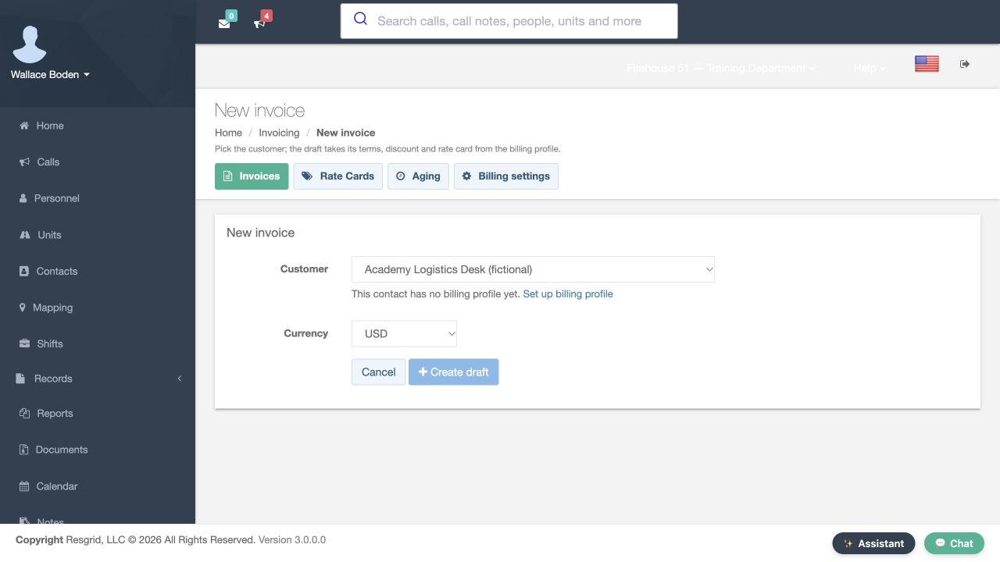
Practice
Choose the customer and identify the profile prerequisite using a separate fictional training customer and invoice.
Step 2
Prepare and save the fictional billing profile
On the customer Billing profile page, review Billing e-mail, Terms in net days and Default discount. This training profile uses an example email address, thirty net days and zero default discount. Scroll to Notes, where the exercise is clearly labeled training only, then select Save. Configure a real customer profile using your department's agreed billing details. Here, the profile is only a prerequisite for practicing the software workflow with fictional data.
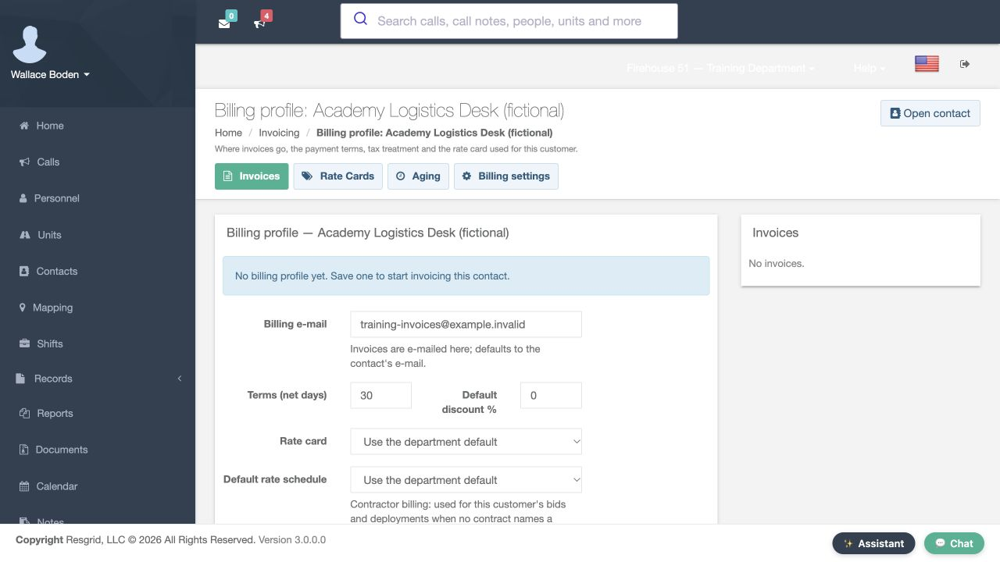
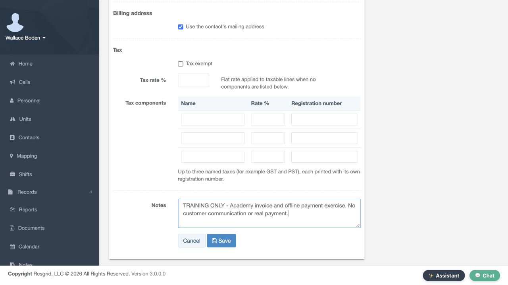
Practice
Prepare and save the fictional billing profile using a separate fictional training customer and invoice.
Step 3
Create the draft and read its inherited terms
Return to New invoice and select the same customer. Keep U S dollars for this example and choose Create draft. The returned page shows Invoice number one with a Draft badge. In its Due field, the helper text says that leaving the field empty uses the profile terms of thirty net days. Notes and Terms are editable below. The draft view lets you prepare the invoice before changing its issued status.
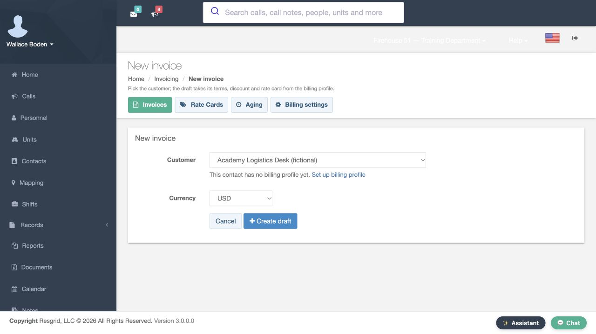
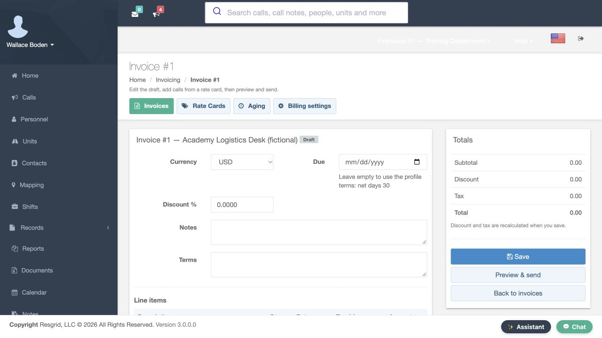
Practice
Create the draft and read its inherited terms using a separate fictional training customer and invoice.
Step 4
Add a manual line and verify totals after saving
Use Add line and enter the description, TRAINING ONLY, Standby exercise. Set quantity to two and rate to fifty, and leave Taxable clear for this fictional example. The line Amount shows one hundred. Notice that the Total panel still shows zero and says discount and tax are recalculated when you save. Select Save, then Preview and send. The returned draft summary shows a total of one hundred U S dollars, nothing paid, and a balance of one hundred. Check the saved result before continuing.
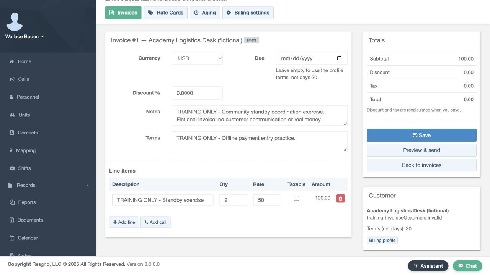
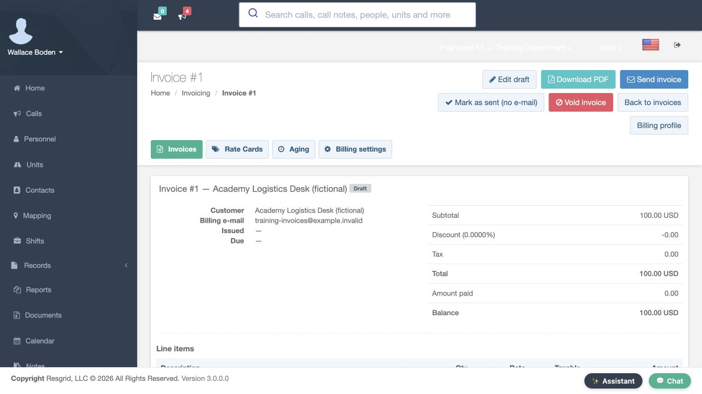
Practice
Add a manual line and verify totals after saving using a separate fictional training customer and invoice.
Step 5
Mark the training invoice sent without email
The draft summary includes Mark as sent, no email. Use that control for this local exercise. The returned page says Invoice marked as sent, and its badge is now Sent. Issued and Due now have dates; Amount paid is still zero, and Balance remains one hundred. This step changes the invoice's issued state. It does not record a payment. The no-email control also lets this exercise proceed without sending an invoice to a customer.
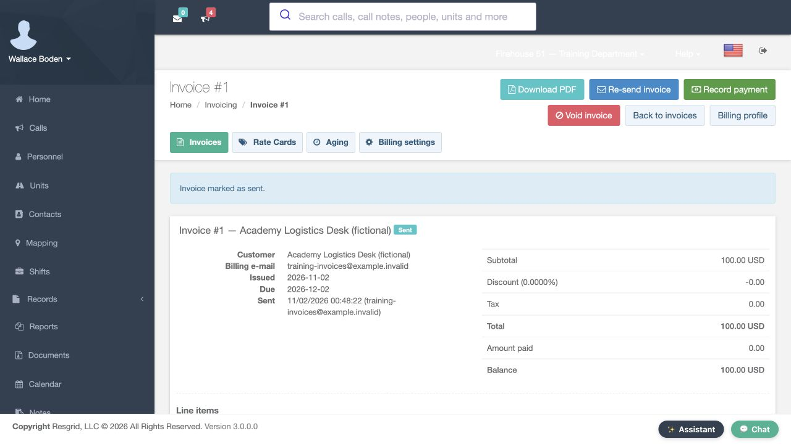
Practice
Mark the training invoice sent without email using a separate fictional training customer and invoice.
Step 6
Record the first fictional offline payment
Choose Record payment. The dialog describes manual payments and separates Amount, Paid on, Method, Reference and Notes. For this software exercise, enter forty, keep the displayed date, choose Other and add the training reference ending in zero one. The note identifies a fictional partial payment with no real money received. Select Record payment in the dialog to save this entry. In normal department work, those fields should describe the actual offline payment you are recording.
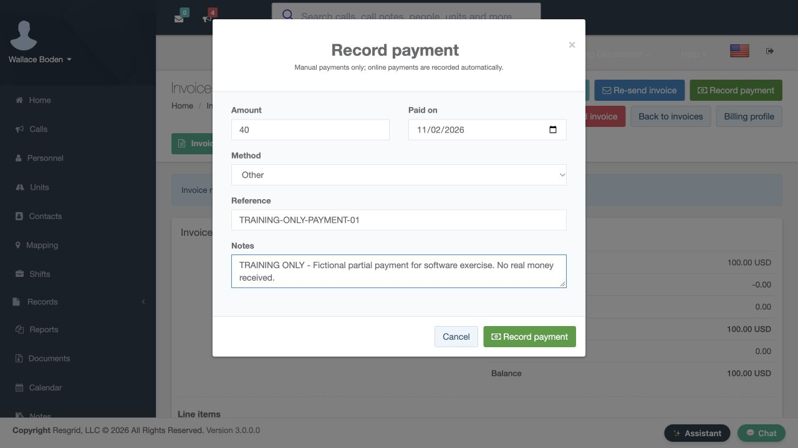
Practice
Record the first fictional offline payment using a separate fictional training customer and invoice.
Step 7
Reload and inspect the partial payment result
Reload the invoice. Its badge now reads Partially paid. Total is still one hundred, Amount paid is forty, and Balance is sixty U S dollars. Scroll to Payments to verify the saved row, including its date, Other method, training reference and forty amount. The row shows Succeeded as its recorded status. This is a manual entry in the invoice history; the exercise has not processed a bank transaction. Compare the saved row and the summary together.
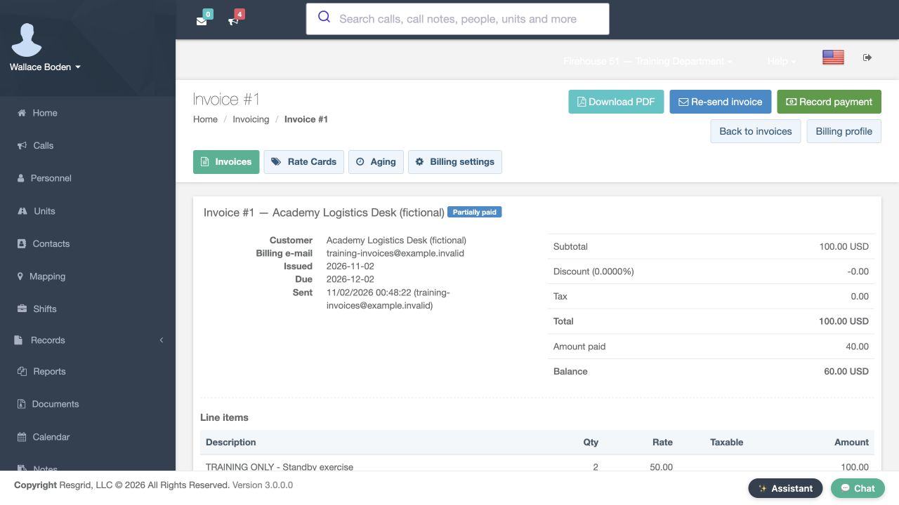
Practice
Reload and inspect the partial payment result using a separate fictional training customer and invoice.
Step 8
Follow the open balance into aging
Select Aging. Accounts receivable aging groups open balances by how far past due they are. In this example, Current shows sixty U S dollars for one invoice. The row below identifies invoice number one, the fictional customer, its due date, the original one-hundred-dollar total and the sixty-dollar balance. This makes the remaining receivable visible separately from the original charge. Open the invoice number link when you need to inspect its supporting details.
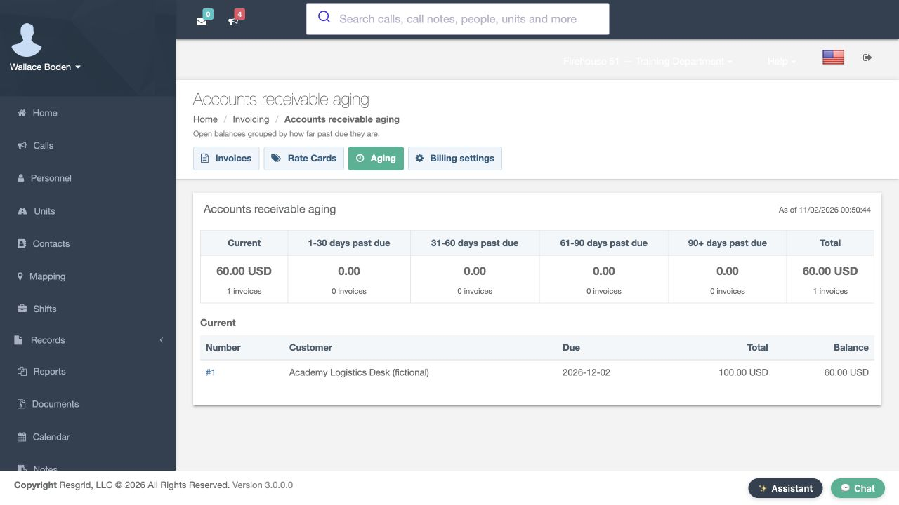
Practice
Follow the open balance into aging using a separate fictional training customer and invoice.
Step 9
Record the remaining fictional balance
Open that invoice and choose Record payment again. This second fictional entry is sixty, with Other as the method and a different training reference ending in zero two. Its note again identifies a software exercise. Save the entry, then reload the invoice. The badge now reads Paid. Amount paid is one hundred, matching Total, and Balance is zero U S dollars. These saved values show the effect of both recorded entries on this invoice.
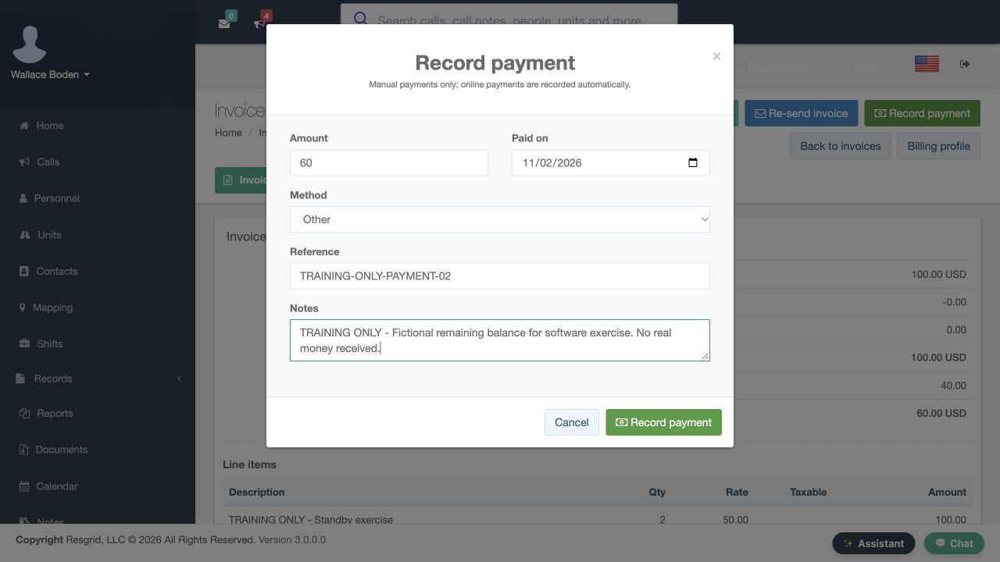
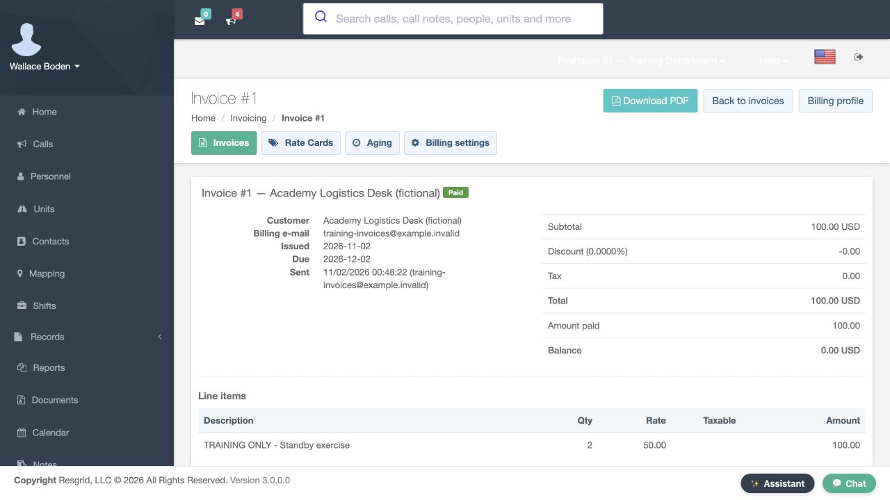
Practice
Record the remaining fictional balance using a separate fictional training customer and invoice.
Step 10
Compare both saved payment references
Scroll to Payments. There are now two separate rows: forty with the first training reference, and sixty with the second. Both show Other and Succeeded. Keeping separate references makes it possible to distinguish the entries later instead of treating the combined total as the complete history. Review the date, method, reference and amount together when investigating how an invoice reached its displayed paid balance.
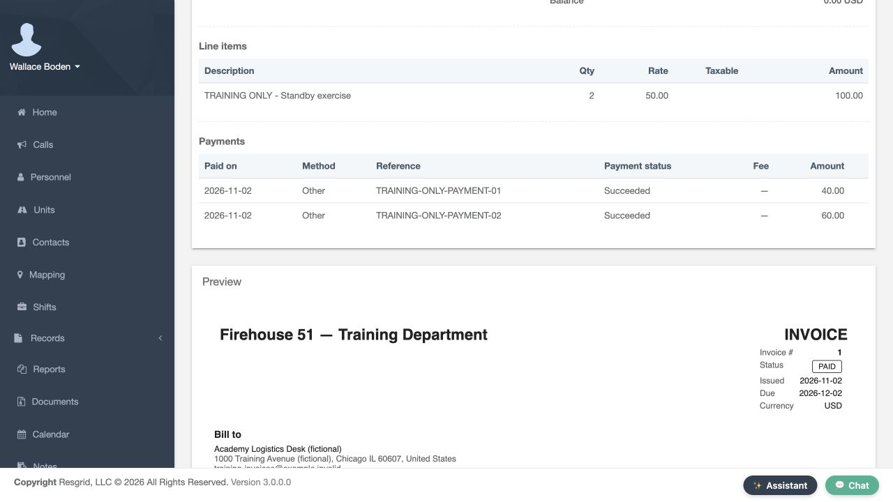
Practice
Compare both saved payment references using a separate fictional training customer and invoice.
Step 11
Verify aging and the Paid invoice filter
Return to Aging. The saved result now shows zero open invoices and No outstanding invoices. Back in Invoices, choose Paid in the Status filter and select Filter. Invoice number one remains in the returned list with Paid status, its original total and a zero balance. The invoice has not disappeared from history when its receivable clears. Use the status filter and open its detail page when you need the line items and payment records.
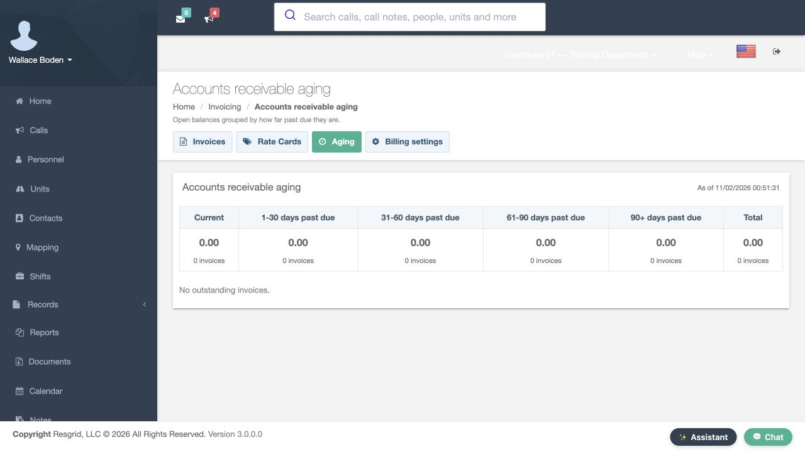
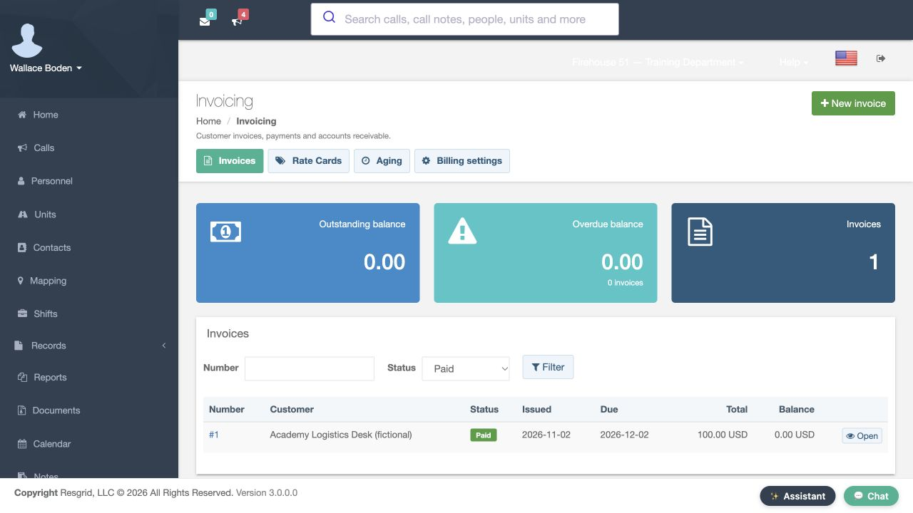
Practice
Verify aging and the Paid invoice filter using a separate fictional training customer and invoice.
Step 12
Apply the same review sequence across departments
The same invoice and payment review can support a security company tracking a standby service, a search-and-rescue organization reviewing an agreed service charge, or a community paramedicine or mental health response team coordinating customer billing. Wildland contractors, industrial response teams, and fire and E M S departments can use the same saved-status checks where invoicing fits their work. Practice with fictional data, compare the line total with the recorded payments, then verify the remaining balance and invoice status.
Practice
Apply the same review sequence across departments using a separate fictional training customer and invoice.
Examples for your department
- Fire / EMS
- Practice invoice administration with fictional service and payment entries.
- Community response
- Coordinate customer billing for community paramedicine or mental health response services where appropriate.
- Search and rescue
- Review a service invoice and the remaining balance in aging.
- Security
- Track an agreed standby-service invoice and separate offline payment records.
- Wildland
- Compare contractor service charges with recorded offline payments.
- Industrial
- Review response-team service invoices and their saved balances.
Transcript
Download transcriptRead the complete transcript
Create an invoice and verify offline payments and aging Audience: Authorized invoicing administrators, Department billing coordinators, Department trainers Choose the customer and identify the profile prerequisite In Invoicing, choose New invoice. Select the fictional Academy Logistics Desk customer. The message below Customer says that this contact has no billing profile yet, and offers Set up billing profile. Create draft is disabled in this selected-customer view. Follow the profile link first. This walkthrough uses one fictional invoice and two fictional offline payment entries to show how saved invoice status, balance and aging change. You need authorized invoicing access for these actions. Practice: Choose the customer and identify the profile prerequisite using a separate fictional training customer and invoice. Prepare and save the fictional billing profile On the customer Billing profile page, review Billing e-mail, Terms in net days and Default discount. This training profile uses an example email address, thirty net days and zero default discount. Scroll to Notes, where the exercise is clearly labeled training only, then select Save. Configure a real customer profile using your department's agreed billing details. Here, the profile is only a prerequisite for practicing the software workflow with fictional data. Practice: Prepare and save the fictional billing profile using a separate fictional training customer and invoice. Create the draft and read its inherited terms Return to New invoice and select the same customer. Keep U S dollars for this example and choose Create draft. The returned page shows Invoice number one with a Draft badge. In its Due field, the helper text says that leaving the field empty uses the profile terms of thirty net days. Notes and Terms are editable below. The draft view lets you prepare the invoice before changing its issued status. Practice: Create the draft and read its inherited terms using a separate fictional training customer and invoice. Add a manual line and verify totals after saving Use Add line and enter the description, TRAINING ONLY, Standby exercise. Set quantity to two and rate to fifty, and leave Taxable clear for this fictional example. The line Amount shows one hundred. Notice that the Total panel still shows zero and says discount and tax are recalculated when you save. Select Save, then Preview and send. The returned draft summary shows a total of one hundred U S dollars, nothing paid, and a balance of one hundred. Check the saved result before continuing. Practice: Add a manual line and verify totals after saving using a separate fictional training customer and invoice. Mark the training invoice sent without email The draft summary includes Mark as sent, no email. Use that control for this local exercise. The returned page says Invoice marked as sent, and its badge is now Sent. Issued and Due now have dates; Amount paid is still zero, and Balance remains one hundred. This step changes the invoice's issued state. It does not record a payment. The no-email control also lets this exercise proceed without sending an invoice to a customer. Practice: Mark the training invoice sent without email using a separate fictional training customer and invoice. Record the first fictional offline payment Choose Record payment. The dialog describes manual payments and separates Amount, Paid on, Method, Reference and Notes. For this software exercise, enter forty, keep the displayed date, choose Other and add the training reference ending in zero one. The note identifies a fictional partial payment with no real money received. Select Record payment in the dialog to save this entry. In normal department work, those fields should describe the actual offline payment you are recording. Practice: Record the first fictional offline payment using a separate fictional training customer and invoice. Reload and inspect the partial payment result Reload the invoice. Its badge now reads Partially paid. Total is still one hundred, Amount paid is forty, and Balance is sixty U S dollars. Scroll to Payments to verify the saved row, including its date, Other method, training reference and forty amount. The row shows Succeeded as its recorded status. This is a manual entry in the invoice history; the exercise has not processed a bank transaction. Compare the saved row and the summary together. Practice: Reload and inspect the partial payment result using a separate fictional training customer and invoice. Follow the open balance into aging Select Aging. Accounts receivable aging groups open balances by how far past due they are. In this example, Current shows sixty U S dollars for one invoice. The row below identifies invoice number one, the fictional customer, its due date, the original one-hundred-dollar total and the sixty-dollar balance. This makes the remaining receivable visible separately from the original charge. Open the invoice number link when you need to inspect its supporting details. Practice: Follow the open balance into aging using a separate fictional training customer and invoice. Record the remaining fictional balance Open that invoice and choose Record payment again. This second fictional entry is sixty, with Other as the method and a different training reference ending in zero two. Its note again identifies a software exercise. Save the entry, then reload the invoice. The badge now reads Paid. Amount paid is one hundred, matching Total, and Balance is zero U S dollars. These saved values show the effect of both recorded entries on this invoice. Practice: Record the remaining fictional balance using a separate fictional training customer and invoice. Compare both saved payment references Scroll to Payments. There are now two separate rows: forty with the first training reference, and sixty with the second. Both show Other and Succeeded. Keeping separate references makes it possible to distinguish the entries later instead of treating the combined total as the complete history. Review the date, method, reference and amount together when investigating how an invoice reached its displayed paid balance. Practice: Compare both saved payment references using a separate fictional training customer and invoice. Verify aging and the Paid invoice filter Return to Aging. The saved result now shows zero open invoices and No outstanding invoices. Back in Invoices, choose Paid in the Status filter and select Filter. Invoice number one remains in the returned list with Paid status, its original total and a zero balance. The invoice has not disappeared from history when its receivable clears. Use the status filter and open its detail page when you need the line items and payment records. Practice: Verify aging and the Paid invoice filter using a separate fictional training customer and invoice. Apply the same review sequence across departments The same invoice and payment review can support a security company tracking a standby service, a search-and-rescue organization reviewing an agreed service charge, or a community paramedicine or mental health response team coordinating customer billing. Wildland contractors, industrial response teams, and fire and E M S departments can use the same saved-status checks where invoicing fits their work. Practice with fictional data, compare the line total with the recorded payments, then verify the remaining balance and invoice status. Practice: Apply the same review sequence across departments using a separate fictional training customer and invoice. Examples for your department Fire / EMS: Practice invoice administration with fictional service and payment entries. Community response: Coordinate customer billing for community paramedicine or mental health response services where appropriate. Search and rescue: Review a service invoice and the remaining balance in aging. Security: Track an agreed standby-service invoice and separate offline payment records. Wildland: Compare contractor service charges with recorded offline payments. Industrial: Review response-team service invoices and their saved balances.